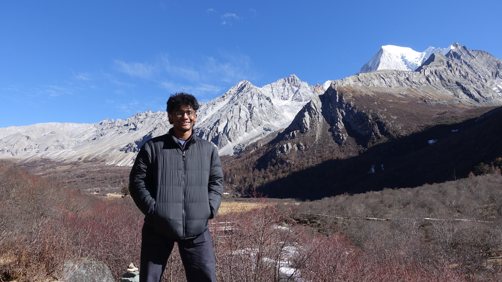
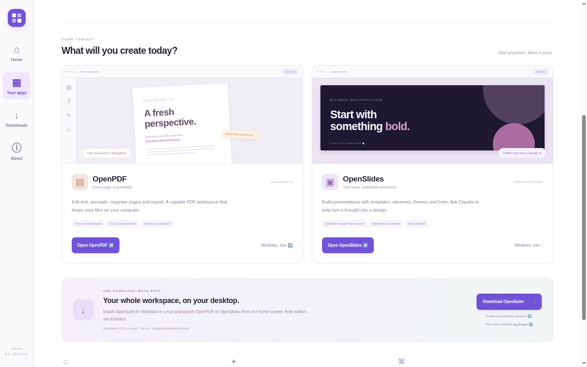
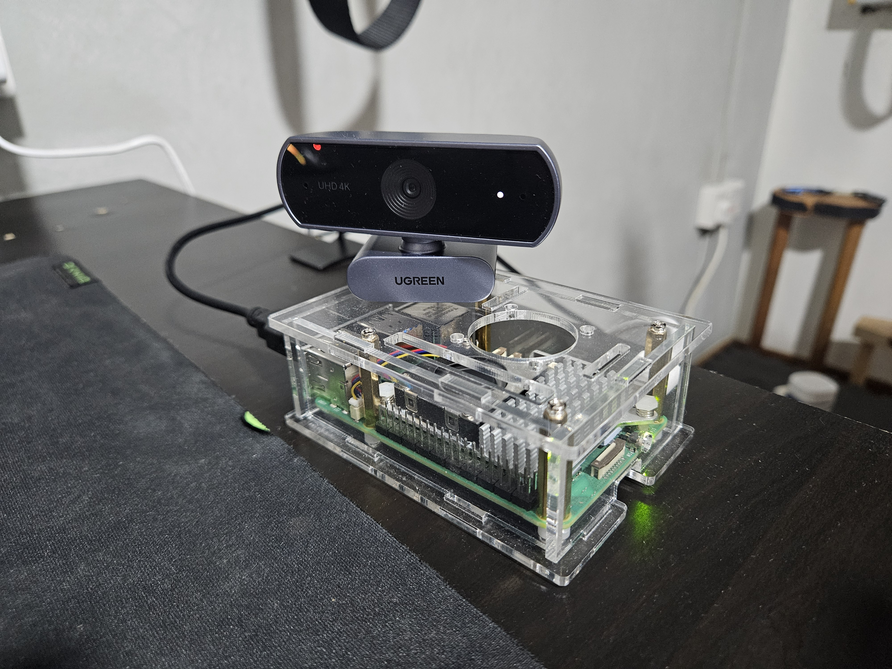
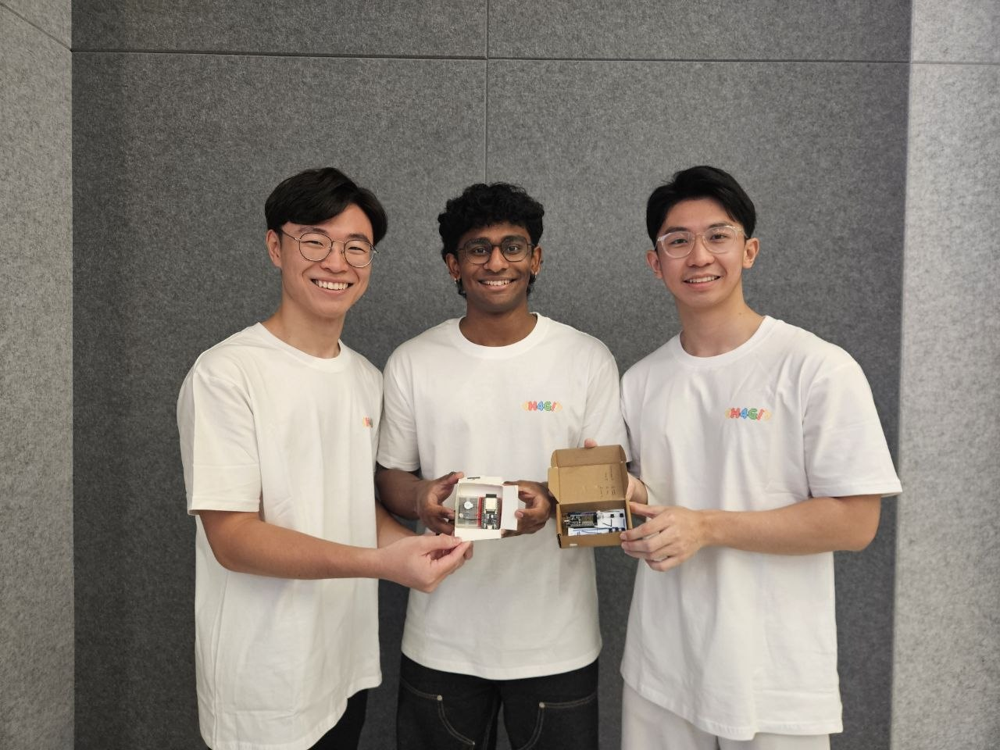
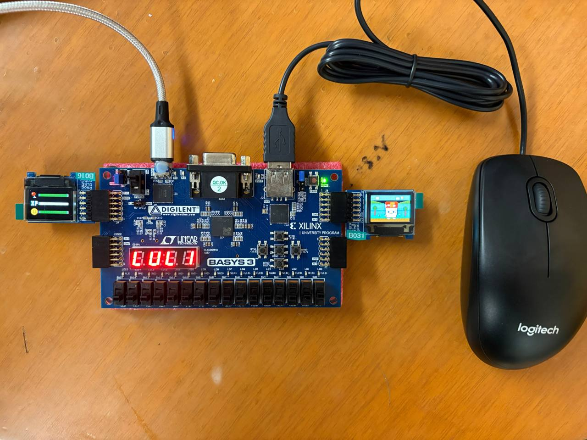
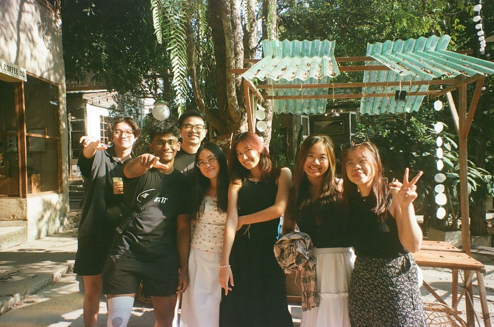

Computer engineering · NUS
Based in Singapore, curious everywhere.A little curiosity.
A lot of making.
Software, hardware,
and the spaces in between.
Hello, I’m Rishabh. I build things you can use, hold, or send into the world — from desktop tools to robots and small systems with a purpose.

01 / Selected work
Ideas, made real.

01Desktop software
OpenSuite
A little more ownership over your everyday tools.
Python · React · Electron · Claude API
02Computer vision
EventLogger
A Raspberry Pi that pays attention.
C++23 · OpenCV · Raspberry Pi · Telegram
03Embedded care
CareSync
Small signals. A closer connection to care.
ESP32 · UDP · Dashboard · ML
04Digital design
Tamagoonchi
A small companion, built from logic.
Verilog · FPGA · OLED · SPI02 / Life beyond the screen
Good company.New places.
There’s more to life than the next build. A few photographs, a few stories, and the little details I want to remember.
Korea · Chiang Mai
Field notes03 / A conversation starts here
Something on
your mind?
A project, an idea, or just a hello. I’d love to hear it.